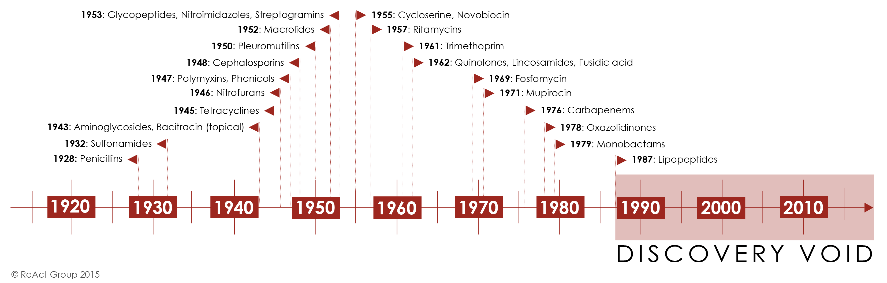

- A brief history of antimicrobial resistance (AMR)
- Global response to antimicrobial resistance
- What are the drivers of antimicrobial resistance?
- AMR in Low-Middle Income Countries (LMICs)
- AMR situation in Italy
- The global future of AMR
- One-Health Perspective of AMR
- Cross-border spread of AMR
- Summary
- Lecture Slides
- References

97039 - GLOBAL HEALTH, ANTIMICROBIAL DRUGS AND VACCINES
Module 1 Lecture Notes: Global Aspects of Antimicrobial Resistance
Russell E. Lewis, Associate Professor, Infectious Diseases, University of Bologna
Lesson date: January 10, 2022
A brief history of antimicrobial resistance (AMR)
Until the 20th Century, influenza and pneumonia, tuberculosis, and enteric infections were among the top three causes of death. The average life expectancy of an adult in Western Europe was less than 50 years, and 2% of children failed to live beyond 5 years of age due to deaths caused mostly by infectious diseases.
Industrialization and growing wealth during the 19th century brought improvements in drinking water and sanitation for many countries, leading to reductions in communicable enteric infections and dramatic improvements in life expectancy. By the early 20th century, advances in immunization further reduced mortality as vaccines for pertussis, diptheria, yellow fever and tuberculosis were introduced. However, common bacterial infections remained a serious medical threat. Streptococcal throat infections were sometimes fatal, ear infections could progress to deafness, mastoiditis or meningitis, and even minor surgeries were associated wit life-threatening infections. Maternal mortality during childbirth approached 1%.
Figure 1. Changes in life expectancy over 500 years. Data source: World Health Bank
Antibacterial resistance emerged with bacteria on earth approximately 2-2.5 billion years ago. In contrast, the first humans are believed to have existed around 2 million years ago. Therefore, it cannot be said that humans are the cause of antimicrobial resistance.Antibiotic resistance pre-dates the use of antibiotics in medicine. Indeed, antibiotic use is inevitable. Any use of an an antibiotic will eventually select for antimicrobial resistance.
The first recorded use of antimicrobial -like substances was by the early Egyptians, Greeks, and Chinese, who used natural products with antimicrobial activity for millennia to treat wounds and infections, even if the causes of these diseases were unknown until the 19th and 20th century.
The microbiologist and immunologist Paul Ehrlich (1854-1915) is credited with the discovery and first medical application of a synthetic antibiotic arsphenamine (Salvarsan) for the treatment of a bacterial infection-syphilis. Yet it was the serendipitous discovery of penicillin in 1928 by Alexander Fleming, and its subsequent purification of the drug in quantities needed for clinical testing by Drs. Florey and Chain in the 1930s, that initiated the true start of the modern antibiotic era. Interestingly, the term antibiotic was actually coined by Selman Waksman, a biochemist and microbiologist who discovered the first effective treatment for tuberculosis, streptomycin, and was awarded the Nobel prize in 1952.
Alexander Fleming was among the first physicians to caution about the risks of resistance to penicillin if used too little or for a too short of period during treatment. In his Nobel Prize acceptance speech, Dr. Fleming noted:
“It is not difficult to make microbes resistant to penicillin in the laboratory by exposing them to concentrations not sufficient to kill them, and the same thing has occasionally happened in the body. The time may come when penicillin can be bought by anyone in the shops. Then there is the danger that the ignorant man may easily under-dose himself and by exposing his microbes to non-lethal quantities of the drug make them resistant.”
-Sir Alexander Fleming, Nobel Prize Lecture, December 11, 1945
By 1947, Fleming’s predictions had come true as the first cases of penicillin resistance were already being reported. Thus began the modern era’s “arms race” between new antibiotic discovery and increasing antimicrobial resistance.
Initially, antibiotic discovery seemed to keep pace with resistance as a host of new chemical classes were developed and introduced in the 1950s-1980’s. For the first half of the century, the repeated and successful response to emerging resistance was to discover new antibiotics.1 Yet by the 1980’s, the discovery of new agents began to slow and this strategy began to fail.. The latest discovery of a new antibiotic class that has reached the market was in 1987. Since then, there has been a lack of innovation in the field, and today there are few novel antibiotic classes in the drug pipeline. In Module 2 we will examine the scientific challenges and market forces that have made new antibiotic discovery increasingly difficult and how access to newer antibiotics is limited in many parts of the world.

Figure 2. Antibiotic discovery timeline. Source ReACT Group 2015.
Once antibiotic resistance develops, it can spread from one colonised patient to another patient if appropriate hygienic precautions (e.g., hand hygiene, isolation) are not followed. The risk of resistant bacteria spreading is enhanced in crowded environments, especially when people in the surrounding area are receiving antibiotics - a common scenario in hospitals especially in wards of critically-ill patients.
The consequences of faltering antibiotic discovery are now being felt worldwide as more and more bacterial infections are becoming harder to treat. Especially worrisome is the lack of antibiotics against common Gram-negative bacteria (i.e. Escherichia coli, Klebsiella pneumonia, Pseudomonas aeruginosa, Acinetobacter baumannii) that are increasingly resistant to all but last-line antibiotics. The rapid global spread of multi- and pan-resistant bacteria, also known in the lay press as “superbugs,” can cause infections that are not treatable with existing antibiotics.
Click this link to watch a YOUTUBE video of how quickly Escherichia coli and develop resistance to ciprofloxacin.